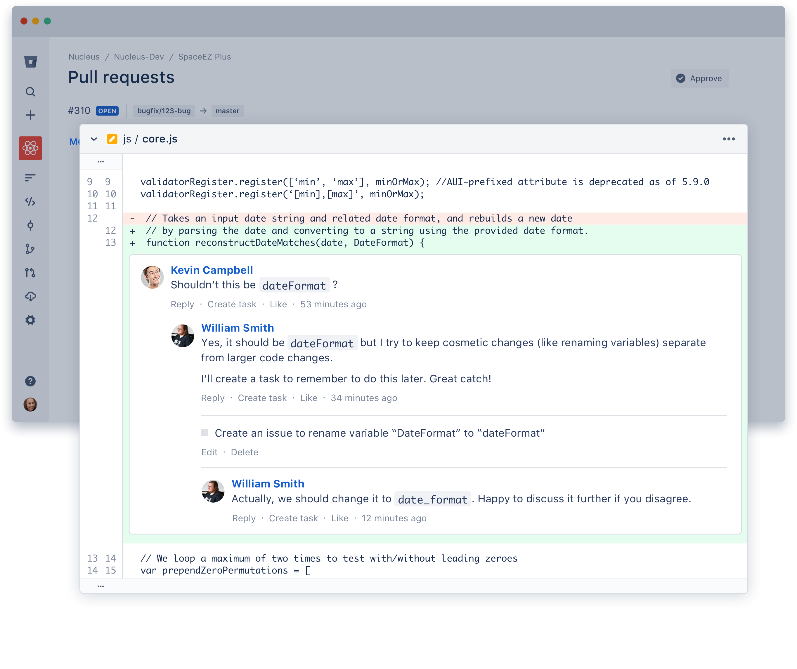

Blog
Stay informed and keep up to date with all the latest Sourcetree news and announcements.

Learn
Get started with Sourcetree by following this tutorial and master Git and your projects in no time.

Sourcetree simplifies how you interact with your Git repositories so you can focus on coding. Visualize and manage your repositories through Sourcetree's simple Git GUI.
Visualize your work and push with confidence. Stage and discard changes by the file, hunk or line.


Not just a Git GUI. Sourcetree places the power of Git front and center in an easy-to-use interface.


Install, update, and manage Sourcetree at scale in your managed enterprise environment.
Learn more
Sign up for the Beta program to try new features, provide feedback and engage with the Sourcetree Team.
Sign up nowBitbucket is more than just Git code management. Bitbucket gives teams one place to plan projects, collaborate on code, test and deploy. Learn more
- Micah Sharp, Head of Technology
Stay informed and keep up to date with all the latest Sourcetree news and announcements.
Get started with Sourcetree by following this tutorial and master Git and your projects in no time.